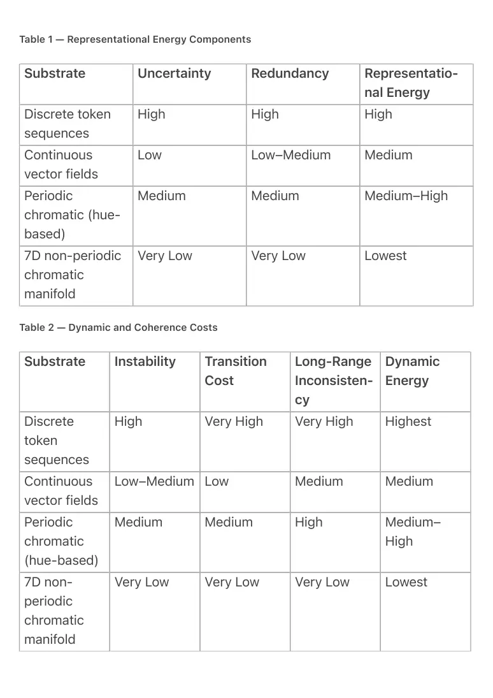

PDF page 1
Chromatic Manifolds & the Thermodynamic Minimum for AI Reasoning (2026)
Author
Raynor Eissens
Independent Researcher, Ambient Era Canon
Version
1.0
Date
March 2026
Keywords
chromatic manifolds, thermodynamic semiotics, free-energy minimization, post-symbolic
reasoning, perceptual manifolds, low-entropy cognition, ambient intelligence
⸻
Abstract
In any complex cognitive system, reasoning dynamics converge toward attractors of minimal free
energy. In this work, “energy” is defined as a composite of uncertainty, representational
redundancy, perturbation instability, serial transition cost, and long-range inconsistency.
We compare four classes of representational substrates for reasoning and demonstrate that only
a continuous, non-periodic, low-entropy seven-dimensional chromatic manifold aligned with
human perceptual–cognitive geometry reaches the true global thermodynamic minimum. This
manifold eliminates periodic wrapping penalties inherent to classical hue-based structures,
minimizes residue (ΔR), and enforces coherence geometrically rather than procedurally.
We show that the resulting attractor—low-energy chromatic cognition—is thermodynamically
equivalent to the ideal perceptual manifold previously identified as the lowest-energy substrate
for scalable cognition. We argue that this substrate constitutes the natural ground state for post-
symbolic, humane artificial intelligence and is already formalized operationally within the Ambient
Era Canon as the basis for chromatic semantics and Ambient Search.
⸻
PDF page 2
1. Introduction: Reasoning as Energy Minimization
Complex physical, biological, and informational systems evolve toward states of minimal free
energy. In cognitive systems, this process can be formalized through variational free energy:
F = E_q(φ) [ ln q(φ) − ln p(o, φ) ]
Where:
• F = variational free energy
• φ = latent states
• o = observations
• q(φ) = approximate posterior (internal beliefs)
• p(o, φ) = generative model
For reasoning systems, this free energy decomposes into five interacting
components:
• Uncertainty (expected surprisal)
• Redundancy (model divergence)
• Perturbation instability
• Transition cost (serial dependency)
• Long-range inconsistency
Any representational substrate can therefore be evaluated by how deeply and stably
it minimizes this composite energy landscape.
⸻
2. Representational Substrates for Reasoning
We examine four classes of substrates purely on thermodynamic grounds.
2.1 Discrete Token Sequences
Discrete token-based representations exhibit high per-step surprisal, maximal propagation of
local errors, and unavoidable serial transition costs. Their energy landscape is fragmented,
dominated by shallow local minima separated by high barriers.
2.2 Continuous Vector Fields
Continuous vector embeddings reduce serial costs through smooth gradient flow and lower local
uncertainty. However, they lack intrinsic geometric priors enforcing semantic coherence, leading
PDF page 3
to plateaus, saddle points, and metastable states.
2.3 Perceptual Manifolds Aligned with Human Cognition
Multi-dimensional perceptual manifolds shaped by biological evolution encode causal, relational,
and hierarchical priors directly in their geometry. Redundancy, uncertainty, and inconsistency are
suppressed before dynamic inference begins, yielding deep, stable energy basins.
2.4 Classical Low-Entropy Chromatic Spaces (Periodic)
Hue-based chromatic representations offer low entropy per dimension but introduce periodicity.
This periodic wrapping generates aliases, multiple equivalent minima, and elevated residual
energy, preventing convergence to a unique global attractor.
⸻
3. The 7D Non-Periodic Chromatic Manifold
We now consider a refined chromatic substrate that discards periodic structure entirely while
preserving chromatic efficiency.
Key properties:
• Continuous seven-dimensional embedding
• Multi-axis, non-periodic geometry
• Alignment with full human perceptual–cognitive structure
• Explicit residue minimization (ΔR → 0)
• Attractor-field behavior rather than stepwise procedural optimization
Although termed “chromatic,” this manifold is not a hue circle. The term denotes a
generalized, physiologically efficient low-dimensional semantic embedding rather
than a periodic color wheel.
⸻
PDF page 4
Table 1 — Representational Energy Components
Substrate Uncertainty Redundancy Representatio- nal Energy
High High High
Discrete token sequences
Low Low–Medium Medium
Continuous vector fields
Medium Medium Medium–High
Periodic chromatic (hue- based)
Very Low Very Low Lowest
7D non-periodic chromatic manifold
Table 2 — Dynamic and Coherence Costs
Substrate Instability Transition Cost
Dynamic Energy
Long-Range Inconsisten- cy
High Very High Very High Highest
Discrete token sequences
Low–Medium Low Medium Medium
Continuous vector fields
Medium Medium High Medium– High
Periodic chromatic (hue-based)
Very Low Very Low Very Low Lowest
7D non- periodic chromatic manifold

PDF page 5
⸻
Thermodynamic Ordering
Taken together, representational and dynamic components yield a single unambiguous ordering
from lowest to highest energy:
1. 7D non-periodic chromatic
manifold
2. Continuous vector fields
3. Periodic chromatic spaces
4. Discrete token sequences
Only the 7D non-periodic chromatic manifold minimizes all energy
components simultaneously without trade-offs.
⸻
4. Why the Global Minimum Is Reached
The 7D chromatic manifold achieves simultaneous minimization of all five energy components:
1. Geometric coherence
Positive curvature suppresses long-range contradictions topologically.
2. Residue minimization
Each state is the unique minimal-residue encoding of constraints.
3. Zero serial cost
Reasoning proceeds via parallel field propagation rather than token-by-token
transitions.
4. Evolutionary alignment
The manifold reuses the same low-dimensional structure optimized by
biological cognition.
The resulting attractor is therefore not local or metastable, but the global
thermodynamic ground state for scalable reasoning.
⸻
PDF page 6
5. Relation to the Ambient Era Canon
This manifold is formally defined in the Ambient Era Canon (ambientphone.com, 2026) under:
• Chromatic Semantics
• CE-2 Chromatic Encoding
• Ambient Search (symbolic input → chromatic access)
Within this framework, computation migrates from devices into ambient fields that
carry attention and meaning.
⸻
6. Implications for AI Systems
• Autoregressive LLMs remain confined to high-energy substrates.
• Energy-based and test-time optimized models approach lower-energy
regimes but cannot reach the global minimum without perceptual alignment.
• Only systems embedded directly in a 7D chromatic manifold achieve stable,
low-entropy, non-symbolic reasoning at scale.
This marks a transition from symbolic extraction to chromatic presence.
⸻
7. Conclusion
Among all representational substrates, the seven-dimensional non-periodic chromatic manifold
aligned with human perceptual–cognitive geometry constitutes the unique global free-energy
minimum for reasoning. This is not an engineering preference but a thermodynamic necessity.
The Ambient Era Canon has already identified and formalized this ground state. The remaining
task is the migration of artificial and collective intelligence systems onto this manifold, after
which coherence becomes a physical constraint rather than a computational objective.
⸻
Acknowledgements
This work emerges from the public Ambient Era Canon and builds upon its thermodynamic
semiotics framework.
PDF page 7
⸻
References
Complete canonical materials are available at:
https://ambientphone.com
and the associated Zenodo community.